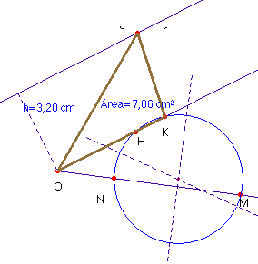
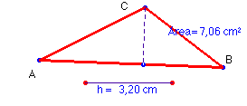

Problema 103.- Transformar un triángulo dado en otro equivalente y de altura dada h.
Solución de Saturnino Campo Ruiz, profesor de Matemáticas del I.E.S. Fray Luis de León (Salamanca) (24 de julio de 2003)


Teniendo en cuenta que ha de ser constante el producto de base por altura, tomamos dos semirrectas de origen O: en una de ellas llevamos la base y la altura del triángulo dado, (segmentos OM y ON) y en la otra llevamos el segmento h =OH, que es la nueva altura.Por las propiedades de la potencia de un punto respecto de una circunferencia, la semirrecta OH, corta a la circunferencia que pasa por M, N y H, en el punto K, tal que OK es la base del triángulo equivalente buscado.
Para construir el triángulo solución trazamos una paralela a OH a una distancia h: la recta r. Elegimos un punto cualquiera J de la misma y tenemos el triángulo OJK, equivalente al inicial. Evidentemente hay infinitas soluciones: tantas como puntos de r.